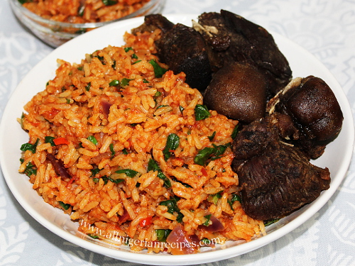

Jollof Rice

Description
The popular Nigerian jollof rice is a delicacy worth adding to your diet. Its reputation precedes it as it is served in almost all occasions hosted in Nigeria.
Ingredients
- Rice
- Tomato paste
- Sliced onions
- Salt
- Grounded fresh pepper
- Mixed vegetables (carrot, corn, peas)
- Vegetable oil
- Seasoning cube
- Powdered seasoning (curry, thyme, ginger, garlic)
- Beef
Steps
- Season the meat with salt, seasoning cube and sliced onions; Heat up vegetable oil and fry the meat and keep.
- Use the vegetable oil in the pot; add sliced onions; add tomato paste after a couple of minutes; Cook until browned; add water and allow it to simmer
- Pre-boil your rice in another pot
- Add the pre-boiled to the simmering tomato sauce on fire
- Add water; Add seasoning to it and stir
- Allow water to dry up; Add the mixed vegetables when it is about drying up and stir until done